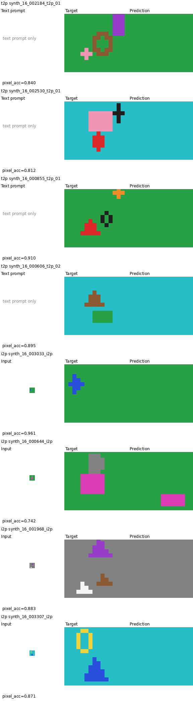

Pixel understanding
Grounding, counting, color/position questions, and reading a palette-indexed raster.
QWEN 3.5-9B BASE · LORA · PIXEL-SPACE POST-TRAINING
Post-train Qwen to understand, generate, and edit images as pixels. Low-resolution images use a palette plus an index grid (PixelBench). High-resolution edits and video use executable PIL/NumPy programs (PixelWorld). This is a post-training project for Qwen, not a PixelWorld benchmark run.

Grounding, counting, color/position questions, and reading a palette-indexed raster.
Emit a palette of at most 8 colors and a 16×16 / 32×32 index grid. No tokenizer or decoder.
Palette/grid for low-resolution edits; executable PIL/NumPy code for high-resolution edits.
Per-frame grids for low-resolution motion; executable RGB programs for PixelWorld-style video.
At most 8 RGB colors, then a square grid of single-digit indices. Standard assistant-token cross entropy; no architecture change.
PALETTE: [[245,245,245],[220,40,40],[40,160,70]] GRID: 0000000000000000 0001111000000000 0001111000000000 0000000000000000
For high-resolution edits and video, Qwen writes code that reads pixels, applies an operation, and saves the result. The evaluator executes it.
import numpy as np
from PIL import Image
a = np.array(Image.open("input.png").convert("RGB"))
mask = np.all(a == [220, 40, 40], axis=-1)
a[mask] = [40, 160, 70]
Image.fromarray(a).save("output.png")The two interfaces are complementary: palette/grid is compact and learnable at low resolution; code is exact and scalable for high resolution and time.
The first checkpoint uses executable code for editing, grounding, and QA. It is the foundation for the code interface and proves the Qwen training pipeline works end-to-end.
| Task | Cases | Success | Details |
|---|---|---|---|
| Real-photo referred-region tint | 64 | 92.2% | region IoU 0.8080 · edit L1 0.0196 · preserve L1 0.0026 |
| Real-photo referring grounding | 64 | 93.8% | mean IoU 0.8096 |
| Controlled pixel operations | 320 | 100% | 320/320 pixel-exact |
| Original MagicBrush semantic editing | 64 | 0% | 36/64 valid outputs · region IoU 0.1395 · open semantic editing remains unsolved |
Full milestone-0 galleries, failure cases, code, and audit: Qwen Pixel Edit results →
The current checkpoint learns the palette + grid format at 16×16, but the grid content is not solved yet. After 300 synthetic steps the model outputs valid palettes and a grid, but the grid is mostly the background color. A 500-step weighted run is testing a non-zero-token loss to break that local optimum.
| Checkpoint | Task | Parse | Palette exact | Grid exact | Pixel accuracy |
|---|---|---|---|---|---|
| 300 (synthetic) | T2P | 100% | 100% | 0% | 86.4% |
| 300 (synthetic) | I2P | 100% | 75% | 0% | 86.4% |
| 300 (synthetic) | Edit | 100% | 100% | 0% | 89.4% |
| 500 (weighted, 100) | Edit | 75% | 100% | 0% | 74.7% |

Detailed per-case preview: 16×16 smoke preview → · Checkpoint-500 evaluation is running.
Qwen/Qwen3.5-9B-Base
9B LoRA edits, grounds, and answers. 92.2% region tint, 93.8% grounding, 0/64 open semantic editing.
16×16 T2P/I2P/PU/edit. Format learned; grid content and weighted loss under test.
Mixed synthetic + real corpus, 8×H20 DDP, 200k–1M rows.
Per-frame grids and PixelWorld-style executable RGB programs.
Palette-indexed raster T2P/I2P/pixel understanding and Pixel Reconstruction Tuning.
Coding agents as direct RGB pixel world models; executable programs and exact PNG ↔ uint32 validation.
Full Qwen Pixel Edit results, galleries, failures, code, and audit.